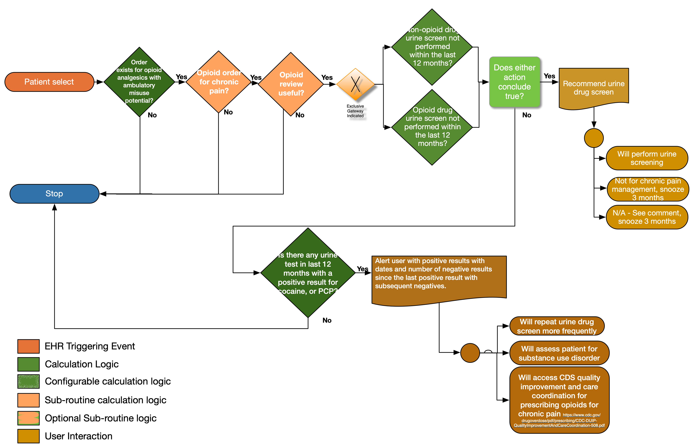

When prescribing opioids for chronic pain, providers should use urine drug testing before starting opioid therapy and consider urine drug testing at least annually to assess for prescribed medications as well as other controlled prescription drugs and illicit drugs (recommendation category: B, evidence type: 4).
{% include multiple-variation-note.html %}The GetDrugNamesFromScreeningCodes(value List<FHIR.Coding>) function extracts the drug name from the display value for the given code. The expectation is that the drug name will be at the beginning of the string and will end with any of the following characters/strings: ‘[‘, ‘tested’, ‘cutoff’. Anything in the string that precedes the first occurrence of any of those characters/strings will be assumed to be the drug name.
The "Missing Opioids" set is identified by comparing the medication code displays with the urine drug screen code's displays - a dependency that implementers should be aware of.
{% include recommendation10-PatientView-functional-description.html %}  {% include recommendation10-data-elements-patient-view.html %}The following artifacts formalize the description of the logic and behavior defined by this recommendation.
| Resource | Type | Description |
|---|---|---|
| CDC 2016 Opioid Prescribing Guideline Recommendation #10 Patient View | PlanDefinition | Event-Condition-Action rule that implements behavior for CDC 2016 Opioid Prescribing Guideline Recommendation #10 |
| Opioid Urine Screening Request | ActivityDefinition | ActivityDefinition recommending a Urine Screening (ProcedureRequest) |
| Recommendation #10 Patient View - urine drug testing when prescribing opioids for chronic pain | Library | Defines the data requirements to support evaluation of recommendation #10 |
| Description | Bundle | CDS Hooks Request | Expected Response |
|---|---|---|---|
| Patient 18 or older. Patient is being prescribed 72 HR Fentanyl 0.075 MG/HR Transdermal System (RxNorm code 197696), once every 12 days for 30 days. This triggers the message that urine drug screening is recommended with the following three feedback options:
i. Perform the screening ii. Indicate that the prescription is not for chronic pain management and snooze for 3 months iii. Indicate that it is not applicable, log a comment and snooze for 3 months. |
Test Bundle | Request JSON | Response JSON |